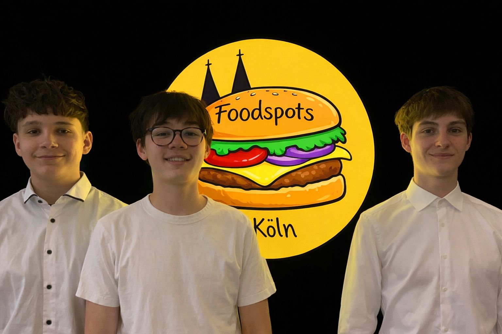

| Foodspots Köln ist aus einer einfachen Idee entstanden: Die besten Orte zum Essen sind oft die, die man nicht sofort findet. Wir haben Foodspots Köln gegründet, weil wir selbst immer wieder nach neuen, besonderen Restaurants, Cafés und Street-Food-Spots gesucht haben – Orte, die wirklich gut sind, aber oft in der Masse an Bewertungen und Empfehlungen untergehen. Genau hier setzen wir an. Unsere Plattform hilft dir dabei, die besten Foodspots in Köln zu entdecken. Egal ob gemütliches Café, angesagtes Restaurant, authentisches Street Food oder versteckte kulinarische Geheimtipps – bei Foodspots Köln findest du Orte, die einen Besuch wirklich wert sind. Unser Ziel ist es, Essen entdecken einfacher und inspirierender zu machen. Statt endlos nach Bewertungen zu suchen, kannst du bei uns echte Empfehlungen entdecken und neue Lieblingsorte finden. Hinter Foodspots Köln steht ein Team aus Food-Liebhabern, die es lieben, neue Küchen zu entdecken, lokale Restaurants zu unterstützen und außergewöhnliche Geschmackserlebnisse zu teilen. Foodspots Köln ist mehr als nur eine Liste von Restaurants – es ist eine Community für alle, die gutes Essen lieben. Entdecke neue Geschmäcker. Finde deine Foodspots. |
 |